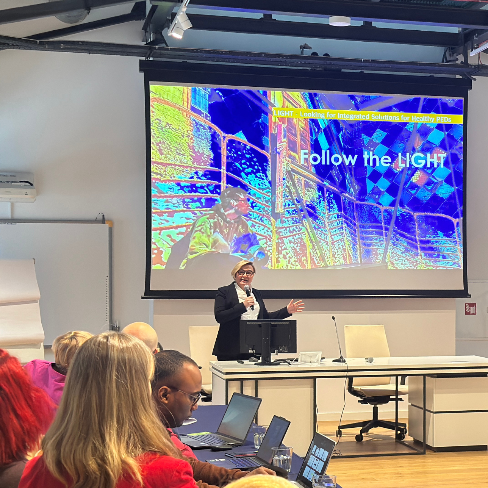
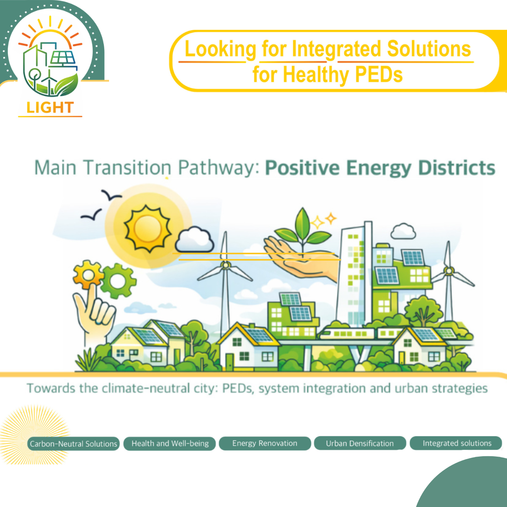

Wpisy z oznaczeniem „przykład” pokazują tylko układ przyszłego tekstu. Nie opisują odbytych wydarzeń.

27–30.09.2026 · Spotkania
Spotkanie konsorcjum w Lund
27–30 września 2026 r. partnerzy LIGHT spotkali się w Lund. Były sesje robocze, prezentacja narzędzi DALEC i wyjście w teren.

17.08.2026 · Badania
Drony i model 3D Martigny
Politechnika Gdańska i IDIAP zeskanowały Martigny dronami i fotogrametrią. Materiał posłuży do modelu 3D miasta, analiz światła dziennego oraz symulacji partnerów.

10.02.2026 · Spotkania
PG inauguruje projekt LIGHT
10 lutego 2026 r. na Wydziale Architektury Politechniki Gdańskiej zainaugurowano międzynarodowy projekt LIGHT. Dotyczy zdrowych dzielnic dodatnich energetycznie. Liderem jest Politechnika Gdańska.

Przykład · Spotkania
Relacje ze spotkań konsorcjum
Krótki opis tematu, kilka zdjęć i informacja, co dalej.

Przykład · Badania
Badania w terenie i wizyty studyjne
Co zespół ogląda, jakie dane zbiera i dlaczego mają znaczenie.
Przykład · Warsztaty
Warsztaty i udział mieszkańców
Rozmowy z samorządem, ekspertami i społecznościami lokalnymi.
Przykład · Rezultaty
Postępy prac nad narzędziami cyfrowymi
Modelowanie, światło dzienne, komfort, CitySim i DALEC prostym językiem.